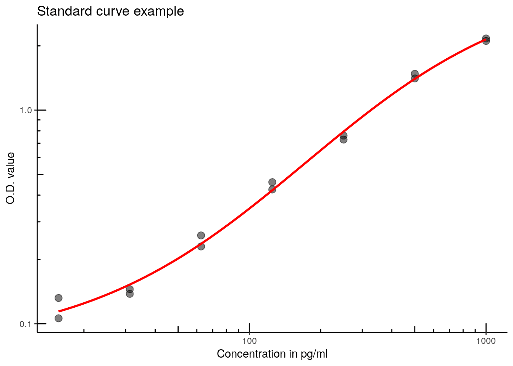

The goal of elisar is to handle Tecan Sunrise excel exports which were modified to include the plate layout and sample identifications. It will perform a 4PL regression (using the drc library) and return a data frame containing the concentrations corresponding to the O.D. values.
Installation
You can install elisar from github with:
# install.packages("devtools")
devtools::install_github("koncina/elisar")Example
Prepare the Excel files
- Export Tecan sunrise results as MS Excel
.xlsfiles. - Add the layout (column names from
1to12and row names fromAtoH) to fill in the IDs for each deposited sample.- Plate the layout plate on the same sheet, another sheet in the same file or even in another excel file.
- The standard values are constructed with a common leading
std_keyid (defaults toSTDbut can be adjusted in theelisa_analyse()function) merged to a trailing concentration value. For example: 250, 500 and 1000 pg/ml standard points would be encoded as STD250, STD500 and STD1000 (see wells in rows A-G and columns 11 to 12 in the screenshot below).
- Add an optional table to extend the identifications. The table should contain the mandatory column
idlisting all IDs reported in the layout. One can add as much columns as required to fully describe the data.
Example of a modified Excel file:
Import the file in R
Use the read_plate() to read in the O.D. values together with the IDs and extended informations as a data frame.
A vector containing multiple files can be passed to read_plate(): These files can contain multiple data plates (O.D. values) but only a single layout and ID table should be present among all files.
library(tidyverse)
library(elisar)
elisar_example() %>%
read_plate() %>%
glimpse()
#> Observations: 96
#> Variables: 10
#> $ file <chr> "example.xls", "example.xls", "example.xls", "exam...
#> $ sheet <chr> "Magellan Sheet 1", "Magellan Sheet 1", "Magellan ...
#> $ element <chr> "(1, 1)", "(1, 1)", "(1, 1)", "(1, 1)", "(1, 1)", ...
#> $ row <chr> "G", "G", "G", "H", "H", "H", "G", "G", "G", "H", ...
#> $ col <int> 1, 2, 3, 1, 3, 2, 5, 6, 4, 4, 6, 5, 8, 7, 9, 9, 8,...
#> $ id <chr> "M1A", "M1A", "M1A", "M2A", "M2A", "M2A", "M1B", "...
#> $ value <dbl> 0.516, 0.251, 0.112, 0.231, 0.092, 0.180, 0.072, 0...
#> $ description <chr> "M1_A", "M1_A", "M1_A", "M2_A", "M2_A", "M2_A", "M...
#> $ treatment <chr> "A", "A", "A", "A", "A", "A", "B", "B", "B", "B", ...
#> $ medium <chr> "M1", "M1", "M1", "M2", "M2", "M2", "M1", "M1", "M...Perform the regression
elisar_example() %>%
read_plate() %>%
elisa_analyse() %>%
glimpse()
#> Warning: 15 OD values are outside the standard range
#> Observations: 96
#> Variables: 13
#> $ file <chr> "example.xls", "example.xls", "example.xls", ...
#> $ sheet <chr> "Magellan Sheet 1", "Magellan Sheet 1", "Mage...
#> $ element <chr> "(1, 1)", "(1, 1)", "(1, 1)", "(1, 1)", "(1, ...
#> $ row <chr> "G", "G", "G", "H", "H", "H", "G", "G", "G", ...
#> $ col <int> 1, 2, 3, 1, 3, 2, 5, 6, 4, 4, 6, 5, 8, 7, 9, ...
#> $ id <chr> "M1A", "M1A", "M1A", "M2A", "M2A", "M2A", "M1...
#> $ value <dbl> 0.516, 0.251, 0.112, 0.231, 0.092, 0.180, 0.0...
#> $ description <chr> "M1_A", "M1_A", "M1_A", "M2_A", "M2_A", "M2_A...
#> $ treatment <chr> "A", "A", "A", "A", "A", "A", "B", "B", "B", ...
#> $ medium <chr> "M1", "M1", "M1", "M2", "M2", "M2", "M1", "M1...
#> $ estimate <dbl> 159.998395, 70.308342, 5.933014, 62.798726, 0...
#> $ estimate_std_err <dbl> 9.880593, 6.329615, 1.879901, 6.192559, NA, 5...
#> $ in_range <lgl> TRUE, TRUE, TRUE, TRUE, TRUE, TRUE, TRUE, TRU...The elisa_analyse() function performs a 4 parameter logistic regression (using drc::drm()) and returns a data frame with the calculated concentration values.
A warning is displayed when O.D. values are outside the standard curve range. These values will be tagged as FALSE in the in_range column.
The extract_standard() function extracts the standard points from the data frame (converting the dose values encoded in the id column to numbers)
elisar_example() %>%
read_plate() %>%
extract_standard(concentration, od) %>%
arrange(concentration)
#> # A tibble: 14 x 2
#> concentration od
#> <dbl> <dbl>
#> 1 15.6 0.132
#> 2 15.6 0.106
#> 3 31.2 0.145
#> 4 31.2 0.138
#> 5 62.5 0.259
#> 6 62.5 0.230
#> 7 125. 0.460
#> 8 125. 0.425
#> 9 250. 0.728
#> 10 250. 0.760
#> 11 500. 1.48
#> 12 500. 1.41
#> 13 1000. 2.11
#> 14 1000. 2.17To render the regression curve, the output of extract_standard() can be used by ggplot() (with the elisar::stat_4pl() layer to draw the drc::drm() 4PL regression model).
elisar_example() %>%
read_plate() %>%
extract_standard() %>%
ggplot(aes(x = concentration, y = od)) +
scale_y_log10() +
scale_x_log10() +
annotation_logticks(sides = "lb") +
geom_point(size = 3, alpha = 0.5) +
stat_4pl(color = "red", size = 1) +
labs(title = "Standard curve example",
x = "Concentration in pg/ml",
y = "O.D. value") +
theme_classic()
#> adjusting drc::drm logDose to 10